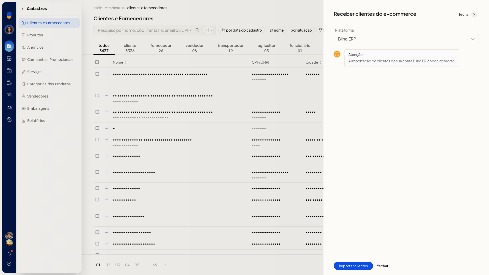

Receber clientes do Bling ERP
No ERP da Olist, você traz os clientes da sua conta Bling ERP para a lista de Clientes e Fornecedores. A importação começa em Cadastros > Clientes e Fornecedores, em Mais ações.
Pré-requisitos
- A integração precisa aparecer no campo Plataforma. Se Bling ERP não estiver na lista, a importação não fica disponível.
Importante
- A importação de clientes da sua conta Bling ERP pode demorar.
Instruções
-
Acesse Cadastros > Clientes e Fornecedores.
-
Clique em Mais ações.
-
Clique em receber clientes do Bling ERP.
-
Em Plataforma, selecione Bling ERP. Para sair sem importar, clique em fechar.

-
Clique em importar clientes. A importação começa e pode demorar.